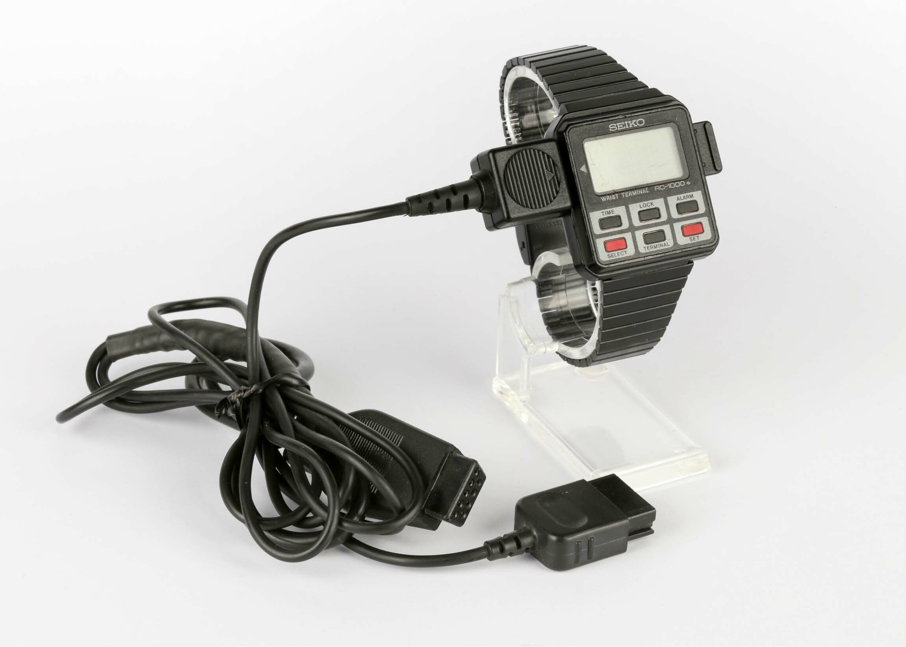

Seiko RC-1000 Wrist Terminal
A wristwatch that plugs into your desktop computer — the first wrist-worn computer terminal, a decade ahead of its time

Overview
The Seiko RC-1000 Wrist Terminal, released in 1984, was a wristwatch that doubled as a computer terminal — one of the earliest wearable computing interfaces ever sold to consumers. Unlike Seiko's earlier Data 2000 (1983) and UC-2000 (1984) wrist computers — which used proprietary keyboard docking stations with electromagnetic induction — the RC-1000 connected directly to desktop computers via RS-232C serial cable. It was compatible with over a dozen computer platforms including the Apple II, IBM PC, Commodore 64, TRS-80, Sinclair ZX Spectrum, and MSX. Marketed as a 'Wrist Terminal,' it offered 2KB of RAM, a 12x2 character dot-matrix LCD, and six side-pusher buttons. Users wrote data using Wrist Terminal Data Manager software on their desktop, then transmitted it in a single 2051-byte dump at 2400 baud. The watch itself was receive-only — a fundamentally asymmetric interaction that prefigured today's phone-to-watch communication paradigm.
The RC-1000 spawned a family including the RC-4000 'PC Datagraph' (1985) and RC-4500 'WristMac' (1988), the latter becoming NASA's choice for the first email sent from space aboard the Space Shuttle Atlantis in 1991. Seiko's computer watch program was remarkably ambitious — the same year the original Macintosh shipped, Seiko was selling a wrist-worn device with 2 kilobytes of user-addressable storage, programmable alarms with custom text, world time with city labels, and a backlight. The watch cost ¥24,000 (~$100-150) in Japan and £99.95 in the UK.
Deep dive
The RC-1000 was developed by Seiko Epson (Seiko Instruments Inc.) as part of a broader push into wrist-worn computing that began with the Data 2000 in 1983. While the Data 2000 and UC-2000 used proprietary wireless electromagnetic induction to communicate with keyboard docks, the RC-1000 was Seiko's first device to connect directly to general-purpose computers via industry-standard RS-232C serial. The watch contained 2KB of user-accessible RAM (organized as 80 screens of 24 characters each), divided into categories: Memos, Phone Numbers, Scheduled Alarms, Weekly Alarms, and World Time. Physical dimensions were approximately 42mm x 37mm x 11mm with a black metal bracelet or plastic strap. It was the only Seiko computer watch with an EL backlight. The watch ran on a single BR2325 lithium coin cell.
The RC-1000's interaction model was deliberately asymmetric: all data authoring happened on the desktop. The user ran Wrist Terminal Data Manager software, which provided a menu-driven interface to create memos, schedule alarms with custom text, and configure world time zones. The software produced a formatted 2051-byte binary payload representing the watch's entire memory. To receive data, the user pressed the watch's Terminal button to enter Terminal Mode, then pressed Lock — the display showed 'RECEIVE' and awaited the data stream at 2400 baud, 8 data bits, no parity, 2 stop bits. The transfer always overwrote the entire 2KB RAM; there was no incremental update. On the wrist, the Terminal button cycled through categories and the Select button scrolled through screens. Alarms would fire with custom text on schedule. The watch could not transmit data back — a pure one-way, read-from-wrist model.
The RC-4000 'PC Datagraph' (1985) upgraded to a three-line dot-matrix display with 2KB RAM. The RC-4500 'WristMac' (1988) added colorful plastic cases and Macintosh compatibility via partner company Ex Machina. In 1991, modified WristMacs were worn by NASA astronauts aboard the Space Shuttle Atlantis (STS-43), paired with a Macintosh Portable running AppleLink. Through TDRSS satellites and modem pools, the crew sent the first email from space — with WristMacs serving as wearable reminder/notification devices. A never-worn, boxed original WristMac was auctioned in 2021 with estimates up to $100,000. The RC-1000/RC-4000/WristMac lineage represents the first commercial wrist-worn computer-terminal ecosystem, directly anticipating the Apple Watch's companion-device architecture by nearly 30 years.
Team & pioneers
- Seiko Epson / Seiko Instruments Inc.. Designer and manufacturer of the RC-1000, RC-4000, and RC-4500 wrist terminals
- Ex Machina, Inc.. Co-developed WristMac (RC-4500) software and Apple Macintosh integration in 1988
- Byron Han. Apple engineer who built the AppleLink-in-Space system enabling the WristMac to be used on STS-43 Atlantis
Media

Sources
- Old Crap Vintage Computing: Seiko RC-1000 Wrist Terminal (teardown, photos, internals)
- MSX Wiki: Seiko RC-1000 — Description, hardware, software, gallery, pricing
- Rob Braun (bbraun): Reverse-engineered serial protocol, memory layout, open-source upload tool
- Conventional Memories Wiki: RC Series Hardware and Software — Complete model/cable/software matrix
- Pocket Calculator Show: Seiko Computer Watch Fun — Family history Data 2000 through WristMac
- GitHub: ppieczul/seiko-rc-1000 — Collected software, disk images, restored BASIC program
- Hodinkee: The Seiko WristMac Is The First Apple Watch (2021 auction coverage)
- TidBITS: AppleLink in Space (29 July 1991) — STS-43 Atlantis mission coverage
- Hackaday: Seiko Had A Smartwatch In 1984
- Deutsches Uhrenmuseum Furtwangen: Museum catalog entry with technical specs